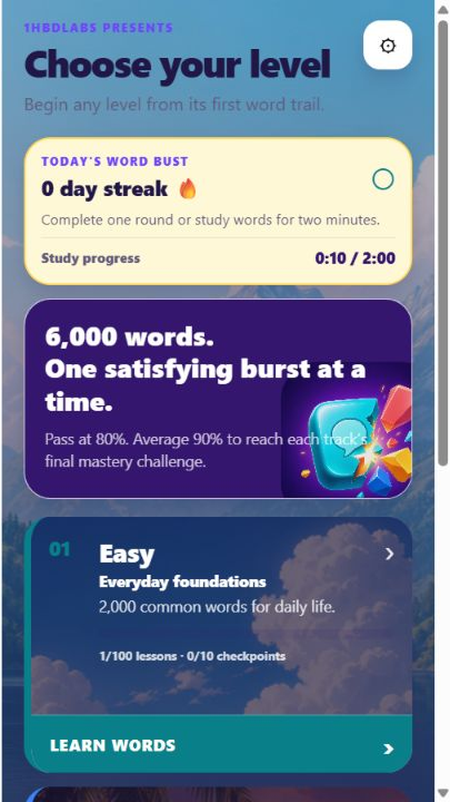
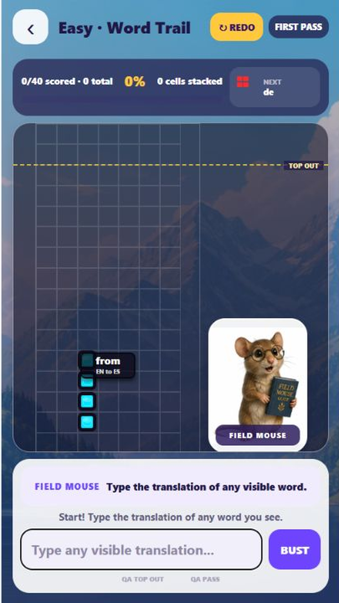
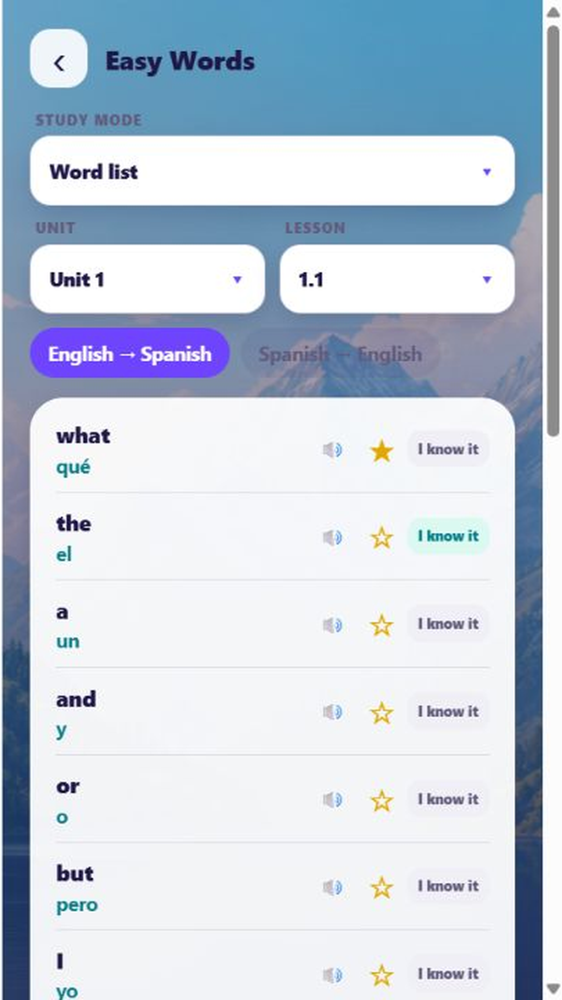

Spot a word
Choose any visible falling block instead of waiting for a fixed order.
Falling-word language arcade
Learn 600 Spanish, English, or Tagalog words by translating fast-moving blocks before they reach the top.
Free to download · Optional one-time ad removal

A mobile block-busting game like Tetris and Candy Crush, where you blast blocks before they fill the area. Fun, cute animal characters help you study and keep your streaks, and you can send your streak to your friends over text and invite them to join you to keep you motivated. Fun widgets with your characters hold you accountable to practice, which is great for motivation.
It has built-in flashcards and word lists that star automatically when you lose and bring those words to the front for you to practice with ease. A counter also counts how many times you got each word wrong — real data to help you study. Bite-sized lessons force you to truly memorize and remember words, and helpful memorization tricks are included too. It's a crash course to help you learn 600 words extremely fast. It's not meant to make you master the language, but to let you start it easily and build a strong foundation so you don't burn out like most people. A game that teaches you a language as a byproduct. Perfect for learning English, Tagalog, and Spanish.
Un juego móvil de romper bloques como Tetris y Candy Crush, donde destruyes bloques antes de que llenen el área. Divertidos y tiernos personajes animales te ayudan a estudiar y a mantener tus rachas, y puedes enviar tu racha a tus amigos por mensaje de texto e invitarlos a unirse para mantenerte motivado. Los widgets divertidos con tus personajes te hacen responsable de practicar, lo cual es genial para la motivación.
Tiene tarjetas de memoria (flashcards) y listas de palabras integradas que marcan con estrella automáticamente cuando pierdes y ponen esas palabras al frente para que practiques con facilidad. Un contador también cuenta cuántas veces fallaste cada palabra: datos reales para ayudarte a estudiar. Las lecciones cortas te obligan a memorizar y recordar las palabras de verdad, y también se incluyen trucos útiles de memorización. Es un curso intensivo para ayudarte a aprender 600 palabras extremadamente rápido. No busca que domines el idioma, sino que lo empieces con facilidad y construyas una base sólida para no agotarte como la mayoría. Un juego que te enseña un idioma como subproducto. Perfecto para aprender inglés, tagalo y español.
Isang mobile block-busting game tulad ng Tetris at Candy Crush, kung saan pinasasabog mo ang mga block bago mapuno ang area. Ang nakakatuwa at cute na animal characters ay tumutulong sa iyo mag-aral at panatilihin ang streaks mo, at puwede mong ipadala ang streak mo sa mga kaibigan mo sa text at anyayahan silang sumali para manatili kang motivated. Ang fun widgets na may mga character mo ay nagpapaalala sa iyo na mag-practice, na maganda para sa motivation.
Mayroon itong built-in flashcards at word lists na awtomatikong naglalagay ng star kapag natatalo ka at dinadala ang mga salitang iyon sa unahan para madali kang makapag-practice. Binibilang din ng counter kung ilang beses kang nagkamali sa bawat salita — tunay na datos para matulungan kang mag-aral. Ang bite-sized lessons ay pumipilit sa iyo na talagang kabisaduhin at tandaan ang mga salita, at kasama rin ang mga helpful memorization tricks. Isa itong crash course para matulungan kang matuto ng 600 salita nang napakabilis. Hindi ito para maging master ka sa wika, kundi para madali kang makapagsimula at magkaroon ng matibay na pundasyon para hindi ka ma-burn out tulad ng karamihan. Isang laro na nagtuturo ng wika bilang byproduct. Perpekto para sa pag-aaral ng English, Tagalog, at Spanish.
Un jeu mobile de casse-blocs comme Tetris et Candy Crush, où vous détruisez les blocs avant qu'ils ne remplissent la zone. De drôles et mignons personnages animaux vous aident à étudier et à garder vos séries, et vous pouvez envoyer votre série à vos amis par SMS et les inviter à vous rejoindre pour rester motivé. Des widgets amusants avec vos personnages vous tiennent responsable de pratiquer, ce qui est super pour la motivation.
Il contient des cartes mémoire (flashcards) et des listes de mots intégrées qui marquent automatiquement d'une étoile quand vous perdez et remettent ces mots en avant pour que vous puissiez pratiquer facilement. Un compteur compte aussi combien de fois vous vous êtes trompé sur chaque mot — de vraies données pour vous aider à étudier. Des leçons courtes vous obligent à vraiment mémoriser et retenir les mots, et des astuces de mémorisation utiles sont aussi incluses. C'est un cours intensif pour vous aider à apprendre 600 mots extrêmement vite. Le but n'est pas de maîtriser la langue, mais de la commencer facilement et de construire une base solide pour ne pas vous épuiser comme la plupart des gens. Un jeu qui vous apprend une langue comme sous-produit. Parfait pour apprendre l'anglais, le tagalog et l'espagnol.
Tetris와 Candy Crush 같은 모바일 블록 깨기 게임으로, 블록이 화면을 가득 채우기 전에 깨뜨려야 합니다. 재미있고 귀여운 동물 캐릭터들이 공부를 돕고 streak을 유지하게 해주며, 친구들에게 문자로 streak을 보내고 함께하도록 초대해 동기를 유지할 수 있습니다. 캐릭터가 있는 재미있는 위젯이 연습을 하도록 책임감을 심어주어 동기부여에 좋습니다.
내장된 플래시카드와 단어 목록은 패배할 때 자동으로 별표 표시하고 그 단어들을 앞으로 가져와 쉽게 연습할 수 있게 합니다. 카운터는 각 단어를 몇 번 틀렸는지 세어줍니다 — 공부에 도움이 되는 실제 데이터입니다. 짧은 레슨은 단어를 진정으로 외우고 기억하도록 하며, 유용한 암기 팁도 포함되어 있습니다. 600개의 단어를 매우 빠르게 배울 수 있는 속성 코스입니다. 언어를 마스터하기 위한 것이 아니라, 쉽게 시작하고 탄탄한 기초를 쌓아 대부분의 사람들처럼 지치지 않도록 돕는 것이 목적입니다. 언어를 부산물로 가르쳐주는 게임입니다. 영어, 타갈로그어, 스페인어를 배우기에 완벽합니다.
How it works
Choose any visible falling block instead of waiting for a fixed order.
Practice recognition and recall in both language directions.
Keep the stack down, finish the level, and build your daily streak.
Inside the game



No lives. No energy limits.
Play through six stages from Easy to Master, then use audio, reversible flashcards, word lists, and starred practice whenever you want a focused review.